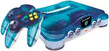
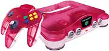

| 家庭用ゲーム機のスタンダード“ロクヨン”に新色登場！ |
|  |
| NINTENDO64 クリアブルー／クリアレッド 発売中 各14,000円 家庭用ゲーム機 |
| テレビゲーム機をプレゼントするなら、ロクヨンで決まり！ ロクヨンこと『NINTENDO64』は、家庭用ゲームマシンの標準機として世界中に普及しています。テレビゲームの代名詞“ファミコン”の血を受け継ぐ信頼性の高いゲーム機にして、14,000円という低価格が魅力的で、幅広い層からの支持を集めているのです。 そんなロクヨンに、この冬、新色がラインナップされました。クリアブルーとクリアレッドの２色です。どちらもポップ感にあふれ、心をウキウキさせるような色で、ギフトに最適！ロクヨンの中身が透けて見えて、好奇心をくすぐります。 性能や機能は従来のロクヨンと同じで、お値段も据え置きの14,000円。もちろん、従来のモノトーンカラーのロクヨンだってありますヨ。こちらも、どんなインテリアにも溶け込むモダンな配色です。あのコ・あのひとには、どの色がいちばん似合いますか？ |
| ↓さらに詳しい情報はこちら 【http://www.nintendo.co.jp/n01/n64/hardware/clear.html】 |
 |
 |
|
 |